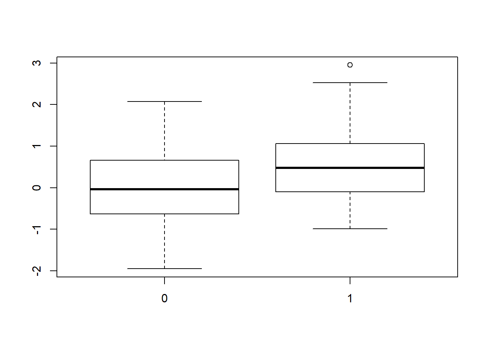
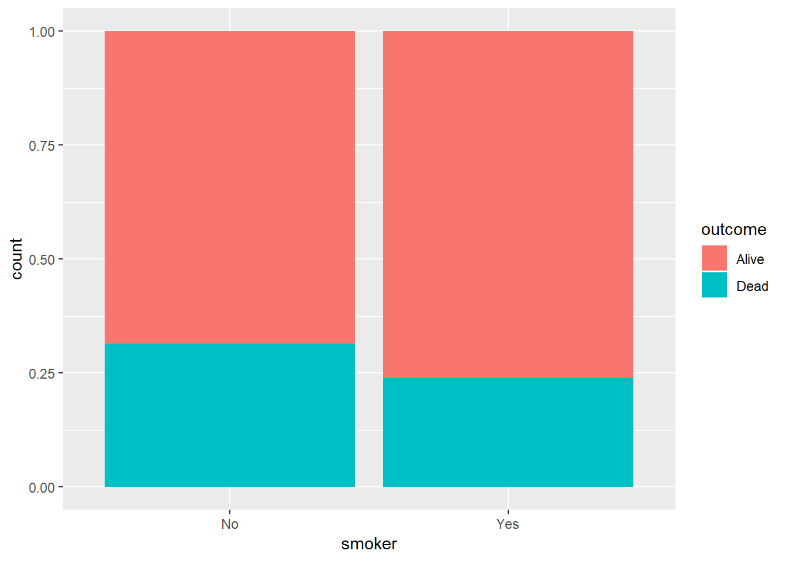
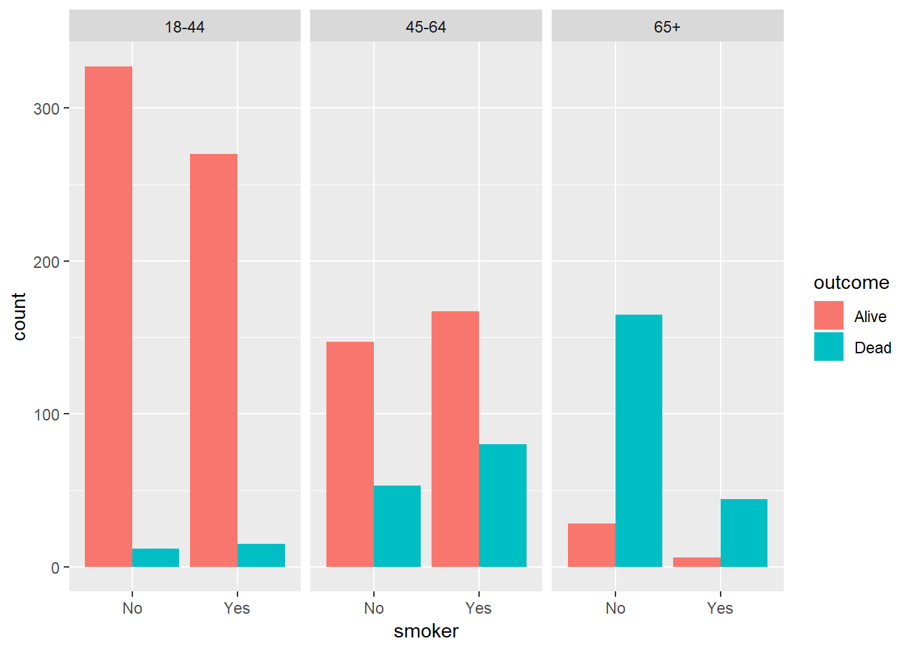

Last updated: 2018-11-09
workflowr checks: (Click a bullet for more information) ✖ R Markdown file: uncommitted changes
The R Markdown file has unstaged changes. To know which version of the R Markdown file created these results, you’ll want to first commit it to the Git repo. If you’re still working on the analysis, you can ignore this warning. When you’re finished, you can run wflow_publish to commit the R Markdown file and build the HTML.
✔ Environment: empty
Great job! The global environment was empty. Objects defined in the global environment can affect the analysis in your R Markdown file in unknown ways. For reproduciblity it’s best to always run the code in an empty environment.
✔ Seed:
set.seed(20181026)
The command set.seed(20181026) was run prior to running the code in the R Markdown file. Setting a seed ensures that any results that rely on randomness, e.g. subsampling or permutations, are reproducible.
✔ Session information: recorded
Great job! Recording the operating system, R version, and package versions is critical for reproducibility.
✔ Repository version: b4d1a69
wflow_publish or wflow_git_commit). workflowr only checks the R Markdown file, but you know if there are other scripts or data files that it depends on. Below is the status of the Git repository when the results were generated:
Ignored files:
Ignored: analysis/figure/
Unstaged changes:
Modified: analysis/lecture10.Rmd
########################################################
#### Read Chapter 11 from http://r4ds.had.co.nz/index.html.
####
#### Projects out this week
####
#### Review permutation tests
######################################################
#-------------------------------------------------------------
## Permutation test for the difference in means of y for groups
## 0-1 in x
## Both: 2-sided p-value (mean_y[0] != mean_y[1]) and 1-sided
## p-value (mean_y[0] < mean_y[1])
#-------------------------------------------------------------
set.seed(1234)
x <- rbinom(100, 1, 0.5)
y <- 0.4*x + rnorm(100, sd=1)
boxplot(y~x) ## We are testing for a difference in means of y for groups x=0 and x=1
obs <- t.test(y~x)
obs$p.value[1] 0.01086042obs.t <- obs$statistic## Permutation test
perm <- NULL
for(i in 1:1000){
y.perm <- sample(y, replace=FALSE, size=100) ## Note that replace = FALSE here!
perm[i] <- t.test(y.perm~x)$statistic
}
## Two-sided p-value: look for absolute values of permutations larger than absolute
## values of observed
twosided <- sum(abs(perm) >= abs(obs.t))/1000
twosided[1] 0.01## One-sided p-value: for one-sided, because we want to test mean_y[0] < mean_y[1]
## and because the t-test estimates mean_y[0] - mean_y[1] based on factor ordering of
## x, we want to know how many negative permutation test statistics were LESS THAN
## OR EQUAL TO (=more extreme) than that observed.
onesided <- sum(perm <= obs.t)/1000
onesided[1] 0.009#-------------------------------------------------------------
## Permutation test for the difference in means of y for groups
## 0-1 in x
## Same as above, but I will directly calculate the difference
## in mean rather than use the t-test
## Both: 2-sided p-value (mean_y[0] != mean_y[1]) and 1-sided
## p-value (mean_y[0] < mean_y[1])
#-------------------------------------------------------------
set.seed(1234)
obs <- mean(y[x == 0]) - mean(y[x==1])
## Permutation test
perm <- NULL
for(i in 1:1000){
y.perm <- sample(y, replace=FALSE, size=100) ## Note that replace = FALSE here!
perm[i] <- mean(y.perm[x == 0]) - mean(y.perm[x==1])
}
## Two-sided p-value: look for absolute values of permutations
## larger than absolute values of observed
twosided <- sum(abs(perm) >= abs(obs))/1000
twosided[1] 0.01## One-sided p-value: for one-sided, because we want to test
## mean_y[0] < mean_y[1] and because our difference in means estimates
## mean_y[0] - mean_y[1], we want to know how many permutation test
## statistics were LESS THAN OR EQUAL TO (=more extreme) than that observed.
onesided <- sum(perm <= obs)/1000
onesided[1] 0.009## What's the issue with multiple testing?
## Consider the following: We have 1 y-variable and 100 different x-variables
## Note: these are data under the null hypothesis (there is no relatinoship
## between x and y)
set.seed(12345)
y <- rnorm(n=50)
x <- matrix(0, ncol=100, nrow=50)
for(i in 1:100){
x[,i] <- rnorm(n=50)
}
#-------------------------------------------------------------
## In class:
## Fit a linear model y ~ x, and test the hypothesis that beta_x = 0.
## Save the p-values in a vector called p.vector.
##
## If our criterion for "rejecting" the null hypothesis is p < 0.05,
## how many null hypotheses would we reject here?
#-------------------------------------------------------------
p.vector <- rep(NA, 100)
for(i in 1:100) {
p.vector[i] <- summary(lm(y~x[,i]))$coef[2,4]
}
length(which(p.vector < 0.05)) /100[1] 0.03## Does this control the Family-wise error rate (FWER)?
## = probability of making at least one Type I error
## FWER <= 1 - (1 - alpha)^c, where c is the # of tests
## So what criterion would we use to control the FWER at 5%?
## => Only if p < 0.05/100 (this is called the Bonferroni correction)
#-------------------------------------------------------------
## In class:
## If our criterion for "rejecting" the null hypothesis is a
## Bonferroni corrected p < 0.05,
## how many null hypotheses would we reject here?
#-------------------------------------------------------------
length(which(p.vector < (0.05/100))) /100[1] 0## Simulation to evaulate uncorrected and Bonferroni-corrected p-values
uncorrected <- NULL
bonf.corrected <- NULL
for(j in 1:50){
#### Simulate the data
y <- rnorm(n=50)
x <- matrix(0, ncol=100, nrow=50)
for(i in 1:100){
x[,i] <- rnorm(n=50)
}
#### Run 100 regressions
p.vector <- NULL
for(i in 1:100){
mod <- lm(y ~ x[,i])
p.vector[i] <- summary(mod)$coef[2,4]
}
#### Count the number of false discoveries
uncorrected[j] <- sum(p.vector < 0.05)
bonf.corrected[j] <- sum(p.vector < 0.05/100)
}
mean(uncorrected)[1] 5.5mean(bonf.corrected)[1] 0.12## What is the False-Discovery Rate? How do we control the FDR?
## => We can use the p.adjust() function on our previously
## created p.vector object.
p.bh.adjusted <- p.adjust(p.vector, method='BH')
p.bonf.adjusted <- p.adjust(p.vector, method='bonferroni')
sum(p.bh.adjusted < 0.05)[1] 0sum(p.bonf.adjusted < 0.05)[1] 0#-------------------------------------------------------------
## In-class exercises: Assume we have 1 y-variable, 80 x-variables
## that are uncorrelated with y (under H_0) and 20 x-variables that
## are correlated with y (under H_1) such that y ~ 2*x
##
## Write a simulation to see how well p.bh.adjusted controls FDR.
## Write a simulation to see how well p.bonf.adjusted controls FWER.
#-------------------------------------------------------------
## Simulation to evaulate uncorrected and Bonferroni-corrected p-values
uncorrected <- matrix(NA, nrow=50, ncol=100)
bonf.corrected <- matrix(NA, nrow=50, ncol=100)
BH.corrected <- matrix(NA, nrow=50, ncol=100)
for(j in 1:50){
#### Simulate the data
x <- matrix(0, ncol=100, nrow=50)
for(i in 1:100){
x[,i] <- rnorm(n=50)
}
coef <- c(rep(0,80), rep(2,20))
y <- x %*% coef + rnorm(n=50)
#### Run 100 regressions
p.vector <- NULL
for(i in 1:100){
mod <- lm(y ~ x[,i])
p.vector[i] <- summary(mod)$coef[2,4]
}
#### Count the number of false discoveries
uncorrected[j,] <- p.vector
bonf.corrected[j,] <- p.adjust(p.vector, method="bonferroni")
BH.corrected[j,] <- p.adjust(p.vector, method="BH")
}
FDR_calc <- function(x) {
FP <- TP <- rep(NA, nrow(x))
for(j in 1:nrow(x)) {
FP[j] <- length(which(x[j, 1:80] < 0.05))
TP[j] <- length(which(x[j, 81:100] < 0.05))
}
check <- FP + TP
remove_index <- which(check == 0)
if(length(remove_index) == 0) {
ret <- mean(FP / (FP + TP))
} else {
ret <- mean(FP[-remove_index] / (FP[-remove_index] + TP[-remove_index]))
}
return(ret)
}
FDR_calc(uncorrected)[1] 0.3504999FDR_calc(bonf.corrected)[1] 0.04FDR_calc(BH.corrected)[1] 0.07407407#=============================================================
## Simpson's paradox
#=============================================================
## Not considering an important variable when studying a relationship
## between two variables can result in the so-called Simpson's paradox
## In other words: the inclusion of a 3rd variable can change the
## apparent relationship between two other variables
## Let's look at the Whickham data, which measured age, smoking, and
## mortality from a 1-in-6 survey of residents of Whickham, UK in the 1970s
library(tidyverse)-- Attaching packages -------------------------------------------------------------------------------- tidyverse 1.2.1 --v ggplot2 3.1.0 v purrr 0.2.5
v tibble 1.4.2 v dplyr 0.7.7
v tidyr 0.8.2 v stringr 1.3.1
v readr 1.1.1 v forcats 0.3.0-- Conflicts ----------------------------------------------------------------------------------- tidyverse_conflicts() --
x dplyr::filter() masks stats::filter()
x dplyr::lag() masks stats::lag()library(mosaicData)
data("Whickham")
?Whickham ## Take a look at the variablesstarting httpd help server ... done#-------------------------------------------------------------
## In-class exercises:
##
## How many observations are in the Whickham data?
## Graphically explore each of the three variables in the dataset.
## What do we expect the relationship between smoking status and
## health outcome to be?
## Create a plot depicting the relationship between smoking status
## and health outcome. Is it what you expect?
## Create a new variable age_category using the following:
## age <= 44 ~ "18-44"
## age > 44 & age <= 64 ~ "45-64"
## age > 64 ~ "65+"
## Recreate your previous visualization, but now facetting on
## age_category. What's going on?
#-------------------------------------------------------------
ggplot(Whickham, aes(x=smoker, fill=outcome)) +
geom_bar(position = "fill")
Whickham<- Whickham %>%
mutate(age_category = ifelse(age <= 44, "18-44",
ifelse(age > 64, "65+", "45-64")))
ggplot(Whickham, aes(x=smoker, fill=outcome)) +
geom_bar(position = "dodge") +
facet_wrap(~age_category)
#=============================================================
## Getting data from the web
##
## https://towardsdatascience.com/ethics-in-web-scraping-b96b18136f01
## http://www.wired.co.uk/article/facebook-news-data-scraping-mark-zuckerburg
#=============================================================
## Many ways to obtain data from web:
## 1. click-and-download on the internet as a âflatâ file, such as .csv, .xls
## 2. install-and-play an API (application program interface) for which
## someone has written a handy R package
## 3. API-query published with an unwrapped API
## 4. Scraping implicit in an html website
## => Let's look at these one-by-one
## NOTE: If you are scraping/using data from a web page that frequently updates
## its content, good idea to save a copy of the data locally
#-------------------------------------------------------------
## 1. click-and-download on the internet as a âflatâ file, such as .csv, .xls
## Simplest case! Use read.csv, readr::read_csv to read data straight into R
## Note: data may still need to be cleaned/tidied!
#-------------------------------------------------------------
## National Centre of Environmental Information:
## blended polar geo biomass burning emissions records
file <- "http://www.ospo.noaa.gov/data/land/bbep2/biomass_burning.txt"
Biomass_Burning_overview <- read.csv(file, sep=" ", header=FALSE, nrows = 2,
stringsAsFactors=FALSE)
Biomass_Burning_Data <- read.csv(file, sep=" ", header=FALSE, skip=2)
head(Biomass_Burning_Data)
colnames(Biomass_Burning_overview) <- as.character(Biomass_Burning_overview[1,])
Biomass_Burning_overview <- Biomass_Burning_overview[-1,]
## Alternatively, save file locally and then read into R## APIs = descriptions of the kinds of requests that can be made
## on a specific software, and kinds of answers that can be returned
## Many sources of data have made (part or all of) their data
## available through APIs
## APIs with R wrappers send queries to server and format response
## directly within R! Reproducible, easy to update/scale up
## Note: some APIs require you to register for access (to track
## users submitting queries and manage demands => meaning you
## might be rate-limited or even blocked if too many requests)
## NOTE: Always check the API access policy of the website to
## know about limits and usage limits
## NOTE: Remember to protect any API keys or tokens, if your chosen
## API requires them!
## Some examples:
#***********************************
## ebird database of bird sightings: http://ebird.org/content/ebird/
library(rebird)
## Hotspot locations like Lincoln Park: http://ebird.org/ebird/hotspot/L1573785
lincoln_park <- ebirdhotspot(locID = "L1573785") %>%
as_tibble()
## List of recent sightings in Milwaukee using ebirdgeo function (look at defaults)
MKEbirds <- ebirdgeo(lat = 43.0389, lng = -87.9065)
MKEbirds %>%
as_tibble()
## List of recent sightings in France
frenchbirds <- ebirdregion("FR")
frenchbirds %>%
as_tibble()
## rebird knows where you are, based on your IP address
birds_near_me <- ebirdgeo() %>%
as_tibble()
birds_near_me#***********************************
## Twitter APIs:
## REST API, Streaming API
## twitteR, streamR, rtweet
library(rtweet)
#***********************************
## Facebook API: https://github.com/pablobarbera/Rfacebook
library(Rfacebook)
## See example here: http://cfss.uchicago.edu/webdata002_twitter_exercise.html
## VERY LARGE LIST OF install-and-play R-API's here:
## https://ropensci.org/packages/
## https://github.com/ropensci/webservices
## https://cran.r-project.org/web/packages/rwunderground/README.html (https://www.wunderground.com)
## Rfacebook, rpinterest, Rlinkedin, fitbitScraper, RGoogleFit, ubeR, ZillowR, ...
#-------------------------------------------------------------
## 3. Write your own query for APIs
#-------------------------------------------------------------
library(httr)
## See here: http://cfss.uchicago.edu/webdata003_api_by_hand.html#introducing_the_easy_way:_httr
## VERY LARGE LIST of API's (without plug-and-play R package) here:
## http://www.programmableweb.com/category/all/apis
## https://www.omdbapi.com for the open movie database
#-------------------------------------------------------------
## 4. Web scraping
## Read: https://blog.rstudio.com/2014/11/24/rvest-easy-web-scraping-with-r/
## http://selectorgadget.com/
## Extract tag names with html_tag(), text with html_text(),
## single attribute with html_attr()
## Note: First confirm there is no R package or API!
## Note: ability to scrape depends on quality of website
#-------------------------------------------------------------
## Explore, try, test, automatize, test!
## Scraping data from the web will require a lot of trial and error.
vignette("selectorgadget")
library(rvest) ## Downloads HTML and turns it into an XML file
# demo("tripadvisor") ## scraping a Trip Advisor page
# demo("united") ## scraping a page that requires a login
# demo("zillow")
## Let's scrape information about "The Lego Movie" from IMDB
## Note: it's a good idea to save your read_html() call into an object,
## otherwise you send a request to the server each time you call it
lego_movie <- read_html("http://www.imdb.com/title/tt1490017/")
lego_movie %>% html_structure()
## Now we need to use the selectorgadget to find the css selector we want
## for rating ("strong span"), or alternatively look at source HTML
lego_movie %>%
html_node("strong span") %>% ## Find first node with that selector
html_text() %>% ## Extract contents
as.numeric()
## Same thing for cast:
lego_movie %>%
html_nodes("#titleCast span.itemprop") %>%
html_text()
## html_table allows us to scrape whole tables
## Let's use Sterling's Best Places: http://www.bestplaces.net
MKE <- read_html("http://www.bestplaces.net/cost_of_living/city/wisconsin/milwaukee")
tables <- html_nodes(MKE, css = "table")
tables %>%
# get the second table
nth(2) %>%
# convert to data frame
html_table(header = TRUE)
#=============================================================
## Next time:
## Interactive graphics with R, Shiny, what to do about failed
## model diagnostics.
#=============================================================sessionInfo()R version 3.5.1 (2018-07-02)
Platform: x86_64-w64-mingw32/x64 (64-bit)
Running under: Windows 10 x64 (build 17134)
Matrix products: default
locale:
[1] LC_COLLATE=English_United States.1252
[2] LC_CTYPE=English_United States.1252
[3] LC_MONETARY=English_United States.1252
[4] LC_NUMERIC=C
[5] LC_TIME=English_United States.1252
attached base packages:
[1] stats graphics grDevices utils datasets methods base
other attached packages:
[1] bindrcpp_0.2.2 mosaicData_0.17.0 forcats_0.3.0
[4] stringr_1.3.1 dplyr_0.7.7 purrr_0.2.5
[7] readr_1.1.1 tidyr_0.8.2 tibble_1.4.2
[10] ggplot2_3.1.0 tidyverse_1.2.1
loaded via a namespace (and not attached):
[1] tidyselect_0.2.5 haven_1.1.2 lattice_0.20-35
[4] colorspace_1.3-2 htmltools_0.3.6 yaml_2.2.0
[7] rlang_0.3.0.1 R.oo_1.22.0 pillar_1.3.0
[10] glue_1.3.0 withr_2.1.2 R.utils_2.7.0
[13] modelr_0.1.2 readxl_1.1.0 bindr_0.1.1
[16] plyr_1.8.4 munsell_0.5.0 gtable_0.2.0
[19] workflowr_1.1.1 cellranger_1.1.0 rvest_0.3.2
[22] R.methodsS3_1.7.1 evaluate_0.12 labeling_0.3
[25] knitr_1.20 broom_0.5.0 Rcpp_0.12.19
[28] scales_1.0.0 backports_1.1.2 jsonlite_1.5
[31] hms_0.4.2 digest_0.6.18 stringi_1.2.4
[34] grid_3.5.1 rprojroot_1.3-2 cli_1.0.1
[37] tools_3.5.1 magrittr_1.5 lazyeval_0.2.1
[40] crayon_1.3.4 whisker_0.3-2 pkgconfig_2.0.2
[43] xml2_1.2.0 lubridate_1.7.4 assertthat_0.2.0
[46] rmarkdown_1.10 httr_1.3.1 rstudioapi_0.8
[49] R6_2.3.0 nlme_3.1-137 git2r_0.23.0
[52] compiler_3.5.1 This reproducible R Markdown analysis was created with workflowr 1.1.1